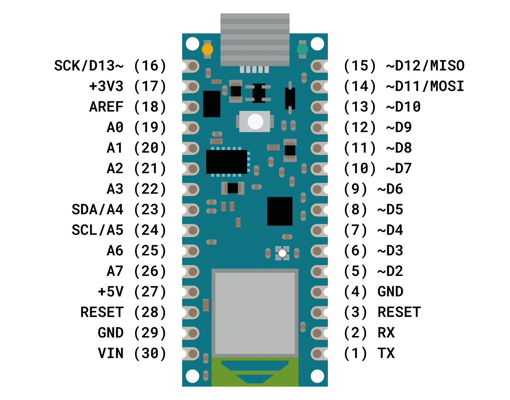
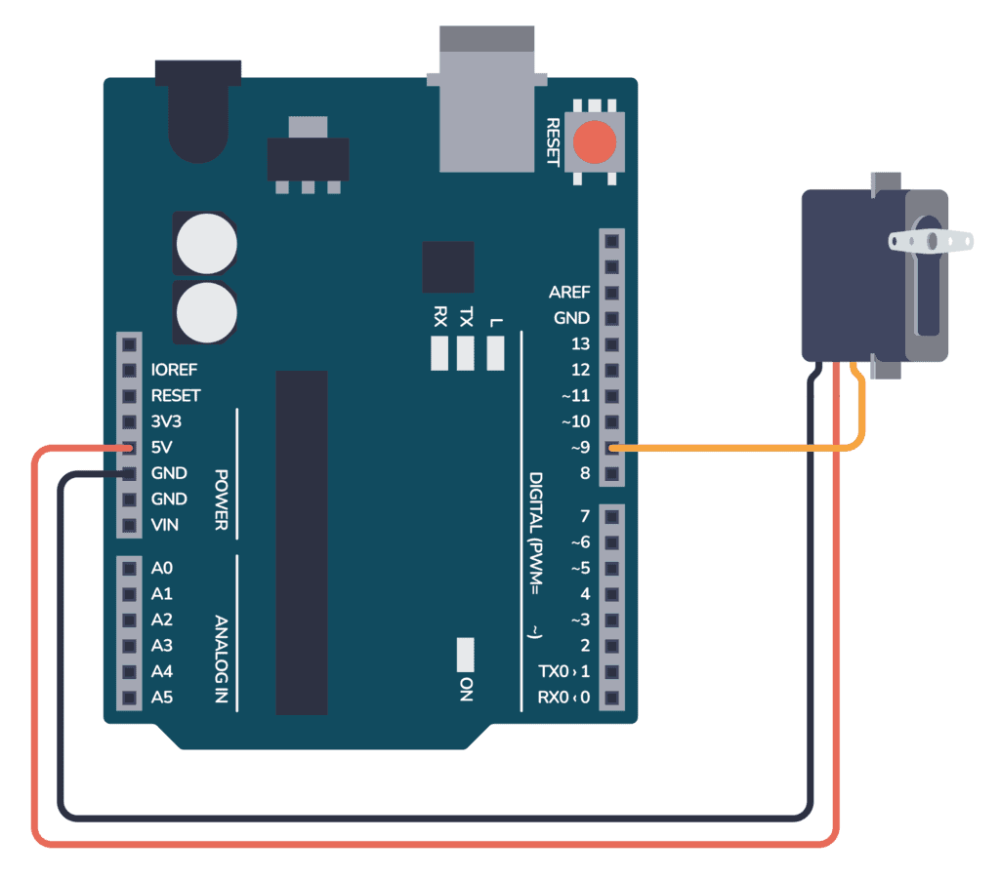
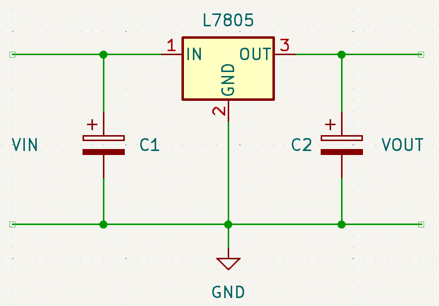
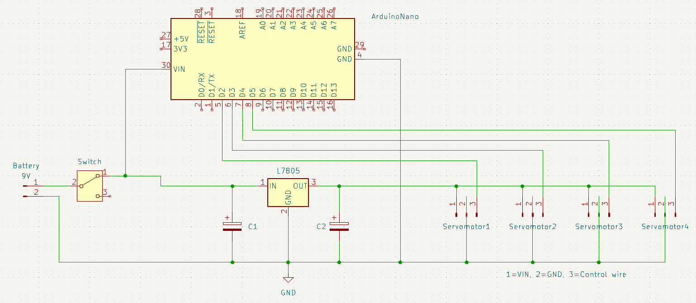

Programming the otto robot
Introduction
Here, you will learn how to design all the robot's electronics.
WARNING : If you're a beginner at welding (Hello 1A), ask for help, and don't start on your own.
Components
Microcontroller

So you need to upload your code via usb using Arduino Ide, but we will look at that in the programming section. The other most important part is understanding the pinout. Firstly, there are the two power pins Vin and Gnd. The arduino nano must be supplied with a voltage of between 7 and 12V. Next, there is just one important concept to understand, and that's the GPIOs: these pins are useful for using motors, sensors etc... Each of them can be configured as input or output. There are two types: digital GPIOs, which can read or write O or 1, and analogue GPIOs, which can read or write any value between 0 and 1.
Actuator

To control it, it must be supplied with a voltage of 5V. In the opposite image, you can see that the servomotor is powered by the arduino nano's 5V GPIO, but it is not possible to do this with the 4 servomotors needed for this robot (the arduino nano is not capable of delivering sufficient current). And the last wire must be connected to a digital GPIO.
Power supply
We need to choose a battery to power our robot: I recommend using a 9V rechargeable battery. It is very easy to use, and can power all the other components for hours.
Power electronics
7805

Switch
It is important to add a switch, just after the battery's + pin. This means that the battery will not discharge
Electronic Design
Now that you have got everything you need, I recommend that you try doing all the electronic design yourself. You will learn better by doing this. I advise you to weld on perfboard, and to ask for advice if you have never welded before.
Here is the final electrical design :
